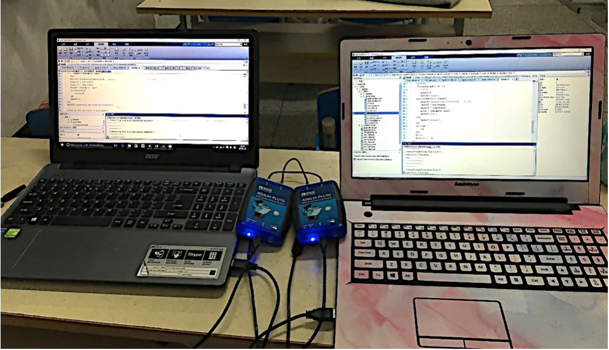

双系统有线通信
1.1双系统有线通信
1.1双系统有线通信
2.1双系统有线通信 （不含停止等待）
2.2双系统有线通信 （不含停止等待）接收端&发送端
3.1双系统有线通信 （含停止等待）
3.2双系统有线通信 （含停止等待）接收端&发送端
4.1三系统无线通信 （不包括停止等待）
因为没有使用停止等待协议以及载波监听的机制，接收端和发送端的消息会互相干扰，导致大部分的消息都是乱码，效率很低。

5.1双系统有线通信 （含停止等待 载波监听）
5.2双系统有线通信 （含停止等待）发送端1&2


5.2双系统有线通信 （含停止等待）接收端to1&to2
可以在消息窗口看到，在最初通信时有一些乱码，稳定之后整个通信系统的乱码出现率相对于未使用载波监听机制的通信系统降低很多。从发送端来看，在接收到CTS回复之后，通信过程中的乱码比较少；从接收端来看，因为发送的CTS信号可能被发送端的请求信号所干扰，导致发送端收到的是乱码，所以要多回复几个CTS消息来保证接收端和发送端都做好了准备。